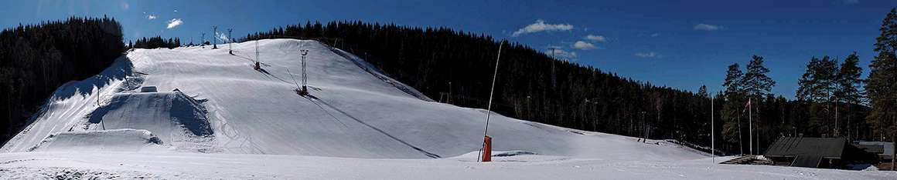

Alpinskole · Fra 4 år
En god start på ski.
Alpinskolen tilbyr skikurs på alle nivåer for barn fra 4 år. Finn informasjon om kveldskurs, tilbud etter skoletid og privattimer.
Se alpinskolens tilbud ↗Før du tar turen: sjekk åpningstideneDriftsstatus er ikke bekreftet i denne demoen. Ingen sanntidsdata er koblet til.
Til åpningstider ↗Kolsåsbakken · Bærums Verk
Bakker for hele familien, på østsiden av Kolsåstoppen. Velkommen til skiglede i nærmiljøet.

Fra første sving til neste tur
Alpinskole · Fra 4 år
Alpinskolen tilbyr skikurs på alle nivåer for barn fra 4 år. Finn informasjon om kveldskurs, tilbud etter skoletid og privattimer.
Se alpinskolens tilbud ↗Skiutleien ligger sammen med heiskortsalget på øvre parkering. Husk legitimasjon.
Les om skiutleie ↗Planlegg besøket
Kolsås Skisenter
Gamle Ringeriksvei 222
1353 Bærums Verk
Demoen viser ikke gjeldende åpningstider. Den eksisterende siden inneholder fortsatt opplysninger fra sesongen 2025/2026. Se åpningstidssiden og kontakt skisenteret hvis du er usikker.
Heiskortsiden har priser og lenke til nettbutikken. Prisene på siden er merket 2025/2026; kontroller sesong og vilkår før kjøp.
Webkameraet er merket «under oppdatering» på dagens nettside. Kontroller tidspunktet på bildet før du bruker det til å vurdere forholdene.